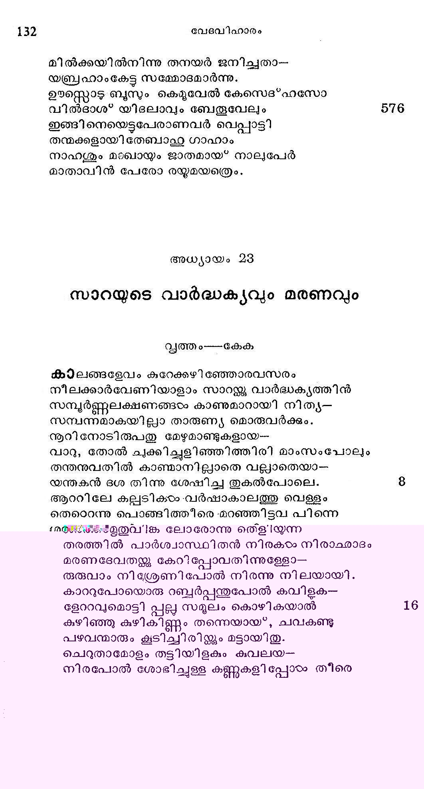

സാറയുടെ വാര്ദ്ധക്യവും മരണവും
വൃത്ത൦--കേക
കാലങ്ങളേവം കുറേക്കഴിഞ്ഞോരവസരം
നീലക്കാര്വേണിയാളാം സാറസന്റ്കു വാര്ദ്ധക്യത്തിന്
സമ്പൂര്ണ്ണലക്ഷണങ്ങടം കാണുമാറായി നിതൃ--
സമ്പന്നമാകയില്ലാ താരുണ്യ മൊരുവര്ക്കും.
നൂറിനോടിരുപതു മേഴുമാണ്ടുകളായ---
വാറു, തോല് ചുക്കിച്ചളിഞ്ഞിത്തിരി മാംസംപോലും
തന്തനുവതില് കാണഞ്മാനില്ലാതെ വല്ലാതെയാ-
യന്തകന് ദശ തിന്നു ശേഷിച്ച തുകൽപോലെ.
ആററിലേ കല്ലടിക്ടം -വര്ഷാകാലത്തു വെള്ളം
തെറൊന്നു പൊങ്ങിത്തീരെ .മറഞ്ഞിട്ടവ പിന്നെ
ഭമരധേഗ്ടമതുവിങര ലോരോന്നു ത്ളിയുന്ന
തരത്തില് പാര്ശ്വാസ്ഥിതന് നിരകാഠം നിരാഛകാദടദം
മരണടദേവതയക് കേറിപ്പോവതിന്നുള്ളോ-
രുരുവാം നിശ്രേണിപോല് നിരന്നു നിലയായി.
കാററുപോയൊരു റബ്ബര്പ്പന്തുപോല് കവിളക-
ളേററവുമൊട്ടി പ്പലല സമൂലം കൊഴികയാല്
കുഴിഞ്ഞു കുഴികിണ്ണം തന്നെയായ, ചവകണ്ടു
പഴവന്മാരും കൂടിച്ചിരിഴ്കകും മട്ടായിതു.
ചെറുതാമോളം തട്ടിയിളകും കുവലയ--
നിരപോല് ശോഭിച്ചുള്ള കണ്ണുകളി പ്പോടം തീരെ

ജജീവനില്ലാതെയായി ഭൂഷിക നിറഞ്ഞുള്ള
കൂപമായ* ഭവിച്ചയ്യോ കാഴ്ചയ്യം മങ്ങിവാങ്ങി.
കാലനു കുറിവയ്ക്കാനുളെളാരു കൂശ്ശാണ്ഡംപോല്
നീലവേണി തന് ശീര്ഷം നരച്ചു വികൃതമായ.
കഫക്കോളിടവിടാതുണ്ടായി ക്കരച്ചും കൊ..-
ണ്ടപത്യത്തിന്നുകൂടി വിഷമം തോന്നുംമട്ടില്
ശുചിത്വം ലവലേശമില്വാതെ ലാലാദിയാ--
ലശുദ്ധിപൂണ്ടു ദേഹകബ*ജതാവ്യാജത്തോടെ
വെടിവാന് പോകുന്നോരു ഭൂമിയേ വടിയുന്നി
നെടുതാമാശയോടു ഭൂയോപി നോക്കി നോക്കി
നടന്നും ദേഹക്റസാന്തിയണ്ടാകും സമയത്തില്
കിടന്നും ദിവസങ്ങംം കഴിച്ചു സ്ൃദ്ധാരത്നം.
കേവലമവസന്നയാകിലും മുന്പുളെളാരു
കോപഗാംഭീര്യതാരശബ്ദഭാഷണാദികഠം
ഒട്ടമേ കുറച്ചില്ല; കച്ഛപം കെട്ടീടിലും
കെട്ടുപോകയി ല്ലോട്ടി യെന്നതു സിദഭ്ധമല്ലൊ.
വലിഞ്ഞു നടന്നിട്ടം ദാസിതന് പ്രഡ്കത്തിക--
ളൊളിഞ്ഞുനോക്കും കുററമുണ്ടെങ്കില് പിടികൂടും
കളഞ്ഞോരുമികൂടി തൂത്തു ശേഖരിച്ചീടും
വിളഞ്ഞ വചനങ്ങഠം കോപത്താലുചരിക്കും.
തുളഞ്ഞു കയറുന്ന വാക്കുകളിരിക്കിലും
വളഞ്ഞ ഹൃത്തില്ലാതെയിരുന്നോരീ സൃദ്ധയേ
മീറുതിങ്ങിയ കൃഷ്ണവല്ലിയേ വ്യാപാരിപോല്
കൂറൊടും സേവിച്ചാത്മഹി തകാംക്ഷികഴഠം ദാസർ.
ഗവ്വമുണ്ടാകും ചില സമയത്തെന്നാകിലും
നീര്വ്യളീകയാമിവടം തന്നുടെ കയ്യില്നിന്നു
ഭക്ഷണം തിന്നു ജീവിച്ചുള്ളൊരു ചേടിവറ്റവം
പക്ഷമായ സഹായിച്ച് വാര്ദ്ധകാക്രമണത്തില്.
ക്ഷീയമാണോദകയാമാറുപോലെയും ഫുല്ല
മായതിന് പിന്പു വാടിത്തുടങ്ങും പുപോലെയും
എണ്ണവററിയ ദീപമെന്ന പോലെയുമമാ-
സന്നികൃഷ്പമാം ചന്ദ്രനെന്നപോലെയമഹോ
തന്നുടെ ദയിതയേ കണ്ടിതബ്രഹാമതി
ഖിന്നനായ* മഭൃതിവക്കിലേകയായ* നില്*ക്കുംവിധം
ഇത്തരുണത്തിലവനാത്മതാരകമായ
സൂക്തികളവഠംക്കുപദേശിചാന് കൃപാന്വിതന്.
അന്തരാത്മാവിലുള്ള വിജ്ഞാനരത്നത്തിനേ
സന്തതം മാറച്ചമത്തീടിന കല്ലം മണ്ണും
സ്വന്തമാം നൂപദേശഖനിത്രംകൊണ്ടു നീക്കി-
യേന്തിയാമണി കയ്യില് പിന്നീടു ശാണോല്ലേഖം.
പന്തിയാംവണ്ണം ചെയ്തുകൊടുംകയാല് കാന്തിതിങ്ങി
ച്ചെന്തീയ്ക്കു തുല്യമായി രത്നവും പ്രകാശിച്ചു.
ഇങ്ങനെയിവളടെ മാനസമണി ക്കൊരു
ഭംഗിയാം സംസ്കരണം നല്കുക കാരണത്താല്
ഭംഗങ്ങളകന്നാത്മവി ശുദ്ധി സംപ്രാപിച്ചു
മംഗലാത്മാവിന് മുന്പില് പാപാനുതാപം ചെയ്താടരം.
സംഭൂതകാലകൃത കല്ൃഷമെല്ലാററിന്നും
തമ്പരാന് വിമോചനം നല്കിയാശ്വസിപ്പിച്ചു.
ദിനങ്ങളാഴഴചകളായ* മാറിയായവമാസ--
ഗണങ്ങളായിത്തീര്ന്നൂ വത്സരങ്ങളമായി
ഒരുനാരം ഹെബ്രോനെന്ന കിരൃതര്ബ്ബയില്വെച്ചു
മരിച്ചാടം, സ്വരല്ലോകാധിവാസകാംക്ഷിണിയായേ.
ഗതജീവി തയായി മാതാവെന്നറിയവേ
വിധരനേകപത്രനീവണ്ണം പ്രലപിച്ചു:
വാത്സല്യനിധിയാമെന് ജനനി ! ദുഃഖി തനായ?
ത്വതുതന് തവാഭയര്ണ്ണേ വന്നിതാ വിളിക്കുന്നു.
ആയിരം തവണയെന് ക്രന്ദിതം കേട്ടെന്നുടെ
മേയമല്ലാതെയുള്ള സങ്കടം ഭവതി തന്
ചുംബനാശ്ലേഷാദിയാല് വിദൂരമാക്കിച്ചെയ്കതോ-
രംബ! നിന്ശ്രവണമെന് വ്ളിക്കു ചായ*ചിീട നീ.
മിണ്ടാതെ കിടക്കുന്നതെന്തുമേ നിരവധി-
യണ്ടല്ലൊ സുസാന്ത്വനവചനം നിന്വക്രരത്തില്
ജ്യേഷ്മാന്െറ പരിഹാസവാക്കുകളെ ന്മാനസം
പ*ളഷ്ടമാക്കുന്നനേരം തൂമധവാര്ന്നൊലിക്കും
ഇഷ്ടവാണികളാലെന് ഹൃദയത്തിന്നു തുഷ്ടി
പുഷ്മികയം നല്കും നിന്െറ മൌനിത ദുന്യഹംതാന്.
വല്തുമനിഷ്ടം ഞാന് ചെയ്തിട്ടണ്ടെങ്കിലമ്മേ!
കില്ലെന്യേ ക്ഷമിക്ക മന്മാതാവേ!
എനിക്കായ* നീ സഹിച്ച ഭകാടിദുര്ഘടങ്ങളിന്
കണികജ്ക്കാകിലുംതേ നിഷ്*കൃതി ചെയ്തിടുവാന്
കഴിവില്ലെനിക്കയ്യോ കല്ലകവ്വക്ഷത്തിന്നു
കാട്ടപാഴ*ച്ചെടി യെന്തു കാമമേകുവാന് പോരും?
എന്നുടെ നോവു നിന്െറ നോവായ് നീ വിചാരിച്ചു
എന്നഭിമോടം നിന്െറ മോദമായ്ക്കുരുത? നീ
നിന്നുടെ ദുഃഖരൂപമായൊരുതമിസ്രയ:ല്
ചന്ദ്രികയായ* ഭവിച്ചു മാമക മന്ദഹാസം.
പാണിയാല് മമഭോജ്യമെടുത്തു തിന്മാന് തെല്ലം
ത്രാണിയില്ലാതിരുന്ന കാലത്തു നിന് പൊല്ക്കയ്യാൽ
വാരിയെന് വായില് തന്നൊരാഹാരാമൃതത്തിന്നു
നേരായതില്ല മമ പിൽക്കാലഭക്ഷ്യസ്വാദം.
നിന്നുപകാരമാകും ചങ്ങലയി ലേക്കണ്ണി--
യെണ്ണിത്തീര്പ്പതിന്നിവന് സമത്ഥനാകില്ലൊട്ടും.
അതിനാലതില്നിന്നു വാങ്ങുകയല്ലാതൊരു
ഗതിയില്ലിവനതി കൃതഘ്ലയന് മമ തായേ!
നിന്നുടെ കരവല്ലി തന്നിലെന്നെ നീ പൊതി.--
ഞ്ഞന്യൂന മമ്മിഞ്ഞയാം സുമത്തിന് മാധ്വീരസം
പൊന്നുമ്മയോടുകൂടിത്തന്ന നന് കയ്യിലെന്നെ--
യിന്നു നീ വഹിച്ചത്രേ പോകേണ്ടതുമ്പര് നാട്ടില്.
നിന്നുടെ തുണിത്തുമ്പില്നിന്നു വിട്ടിടാതെ ഞാന്
കണ്ണുനീര്തൂകി നിന്െറ പിന്നാലെ നടക്കുമ്പോടം
എന്നെയുമെളിതന്നിടുത്തലലയോ മാതാ
വെല്വിടത്തിലും പോയിവന്നതെന് ശിശുതയില്.
അതിനാല് തെല്ലം വിട്ടപിരിവാന് മനസ്ണില്ലാ-
സ്തമൃതനേക്കൊണ്ടുപോക; പോക നാം പരലോകേ.
താവകസഹവാസമെന്യേ യിബ*ഭവനത്തില്
മേവുന്നതെന്തിന്നയ്യോ ദുഃഖസന്ദഗ്്ധനായി:
വേരിറങ്ങാതെ വൃക്ഷമായ ഞാന് മാതൃമൂത്യ
ഭാരവാതത്താല് സമുല്ലാടിതനാ മിക്ഷണം.
ഇങ്ങനെ വിലപിച്ചിട്ള വില്ലാമെ കേഴും
തിങ്ങിന ദുഃഖംപൂണ്ട പുത്രനേ സ്വഹന്നത്താല്
മാറോടുചേര്ത്തു പുണര്ന്നശ്രധാരകടം തുട-
ച്ചേറിയ സാത്ത്വവാക്കു ചൊല്ലിയാശ്വസിപ്പിപ്പാന്
അബ്രഹാം ശ്രമിച്ചുവെന്നാകിലും മനഃക്ഷോഭ
മല്ലവുമടക്കവാന് മേലാതെവരികയാല്
രോദിച്ചുപോയി; മൃത്ൃയവാകുന്ന നാരാചത്തിന്
തോദനം സഹിക്കയില്ലാത്മവിത്തുകരം പോലും.
അസ്ഥിരാവാസനായി പ്രതൃഹം ദിശതോറും
പ്രസ്ഥിതി ചെയ്തലഞ്ഞു വലഞ്ഞോരിവനുടെ
ഭവന്ദ്വാനുഭവങ്ങളില് പങ്കെടുത്തുള്ള മമ
ചന്ദ്രനേര്മുഖിയാളേ! നിന്നുടെ വിയോഗത്താല്
തന്ത്രികടം പറിഞ്ഞൊരു വീണപോലെയും നിജ
മന്ത്രിവേറിട്ട രാജാവെന്നപോലെയുമായേന്.
ഗാര്ഹികമരണത്തിന് യന്ത്രം നീ കയ്യേോററു പൂ-
ജാര്ഹമാം വിധമതു നയിച്ചു ചിരകാലം.
നിന്നുടെ വൈഭവം നിന് ദാക്ഷിണ്യമിവയഭി
വിന്നമായ* വന്നെനിക്ക മന്യര്ക്കും തന്മാര്ഗ്ഗമായ*.
ഇനിമേല്ത്വയോത്സൃഷ്ടയമാകിയ ഭാരം സുമാ--
നിനി! നിന് പതിയാം ഞാന് ചുമക്കയല്ലേവേണ്ടു.
എന്പ്രിയേ! തവധര്മ്മദേഹത്തിലങ്ങുമിങ്ങും
വന്പരിക്കുണ്ടാക്കിയ ചി ലറപ്പിശകുകഠം
നിന്പരലോകയാനസംരംഭത്തിങ്കൽ പോക്കി
ശുംഭത്താം ദേഹിയോട പോയി നീ വാനോര്നാട്ടിൽ
ആകിലും ഭവദീയഭാവി യാശാസ്യമെങ്കില്
ആകുലമല്പംപോല)മില്ലിവന്നകതാരില്. 144:
വേലയജ്ക്കു തക്കതാകുമാദായം ലഭിക്കുകില്
വെയ്ലെന്നോ മഴയെന്നോ നോക്കേണ്ടതുണ്ടോ തെല്ലും ?
മരണം സത്തൂക്കഠംക്കു നഷ്ടമല്ലൊരിക്കലും
സ്ഥിരജീവാപ്പിക്കള്ള വാതിലാണതു നൂനം.
ഭാനുമാന് പ്രഭാതത്തില് പൊന്നൊളിതൂകം മുന്പു
ഭൂരതലോപരി തമസ്സതാധിക്യമേന്തുന്നില്ലേ ?
കോശകാരമെന്നുള്ള കീടകം ശലഭത-
യാശിക്കില് മൃതിമൂലമല്ലാതെ സാധിച്ചിടാ. 182.
ആകയാലെനിയ്ക്കില നൈരാശ്യമൊന്നിനാലും
ശോകമെന്നിയേ നിന്നെക്കാണുകമാത്രം മതി.
വാര്ദ്ധക്യമൂലം ശുഭേ! നിനക്കു ഭവിച്ചുള്ളോ--
രത്തികടം നീങ്ങി സവസ്ഥയായി നീയിന്നേരത്തില്
മണ്മയമായ കൂടില് നിന്നുടന് പറന്നഹോ
വിണ്ണവര ലോകത്തെത്തിയിരിപല്പൂ നിന് ചൈതന്യം.
ശൈശവം ബാലം തതോകംമാരം താരുണ്ൃവ്ം
നാശദൂലകമായ വാദദ്ധകൃമെന്നിവയാല്
ഭൂഷിതമാകില്ല നിന് വിശുദ്ധമാകുമാത്മാ
നാശമാം വെടിയുണ്ടയെത്താത്തോരിടത്തായ* നാ.
ഇങ്ങോട്ട വന്നെന്നെ നീ കാണുക സാധിക്കുകി--
ല്വംഗനാമണേ! ഞാനും വരുന്നു നിന് പിന്നാലെ.
ഇണയോടകന്നേക നരനായ് വാഴുന്ന ഞാ-
നണയ്യം തവവാസടദ്വാരി താമസംവിനാ.
ഭൌമി കമായ സവ്യദുഃഖവും മറന്നീശ--
നാമത്തിലമര്തൃരായ* നമ്മഠയാക്കു പാക്കാം മേലില്.
നമ്മുടെയസ്ഥി മണ്ണില് ചിതറിക്കിടക്കവേ
നമ്മുടെ ജീവന് ടൈവകരത്തിലുല്സിക്കും.
അപ്പോഴേയറിവു നാം പ്രപഞ്ചഭോഗമെല്ലാം
സ്വപ്പമായിരുന്നുവെന്നുടംക്കാര്മ്പിലുല്ബുൃദ്ധരായ*.
ഇങ്ങനെ വിലപിച്ചു ഭുഃഖാവര്ണ്ണവത്തില് സ്വയം
മുങ്ങിയെങ്കിലും പരമാത്മസാക്ഷാല്ക്കാരത്താല്
പൂര്ണ്ണശാന്ത്യഭിഖ്യമാം പോതത്തിലേറിയബ്രാം
തീരണ്ണസാഗരനായിക്കര്ത്തവൃതീരത്തെത്തി.
ഹേത്വനോട മക*പലാ ശ*മശാനം വിലയ്ക്കു വാങ്ങുന്നുതു*
തന്നുടെ വധുവിനേ സംസ്കരിപ്പാന് വേണ്ടിട--
മന്യദേശിയാം തനിക്കില്ലായ*കമൂലമേററം
ഖിന്നനായ്* തദ്ദേശ്ൃരാം ഹേത്ൃരോടത്യാദരം
ചൊന്നവര്ക്കകമലരുരുകും പ്രകാരത്തില്.
സൌജന്യബദ്ധികളേ! നിങ്ങടെ മദ്ധ്യത്തിൽ ഞാന്
നീചനാമൊരു പരദേശി സംശയമില്ലാ.
എന്നുടെ നാടും വീടും വിട്ട ഞാനിവിടത്തില്
വന്നുപാര്ക്കുന്നു വേറേ ശരണമിലുാാത്തോനായ.
ശരണരഹിതന്മാര്ക്കീശ്വരന് തുണ മാന്യ
നരരാലത്രെ വേണ്ടസഹായം ചെയ*വതവന്.
ഇപ്രദേശത്തിനെല്ലാ മവകാശികളായ
സുപ്ര ഭക്കന്മാര് നിങ്ങടം; നിങ്ങടെ ദയാവര്ഷം
ഉടംപ്രകമ്പനമേററു മിപ്പരദേശി മേല് പെ--
സ്ലപ്രമേയമാം ദുഃഖം ശമിപ്പാന് കടാക്ഷിപ്പിന്.
സാധവാമെനന്െറ ഭാര്യ മരിച്ചുകി ടക്കുന്നു
ഏതിടത്തവളെ ഞാന് സംസ്കാരം ചെയ്തിടേണ്ടു?
ഉതസംസ്കാരമെന്നതേതു ജാതിക്കും വേണ്ട
വിധിയാണെങ്കിലും ഞാന് വിദേശ്യനെന്തു ചെയ്യും ?
സ്ഥലമില്ലെനിക്കിങ്ങു നിലയുമില്ലകക്ഷി--
ബലവും മേല്പടിയാം നിങ്ങടം മാത്രമെന് സാഹ്യം.
അതിനാല് പ്രമീതയെ സംസ്കരിപ്പതിനിഹ
ച്ി തമായൊരു ഭൂമി തരുവിന് വിലവാങ്ങി.
ഇത്ഥമത്ൃയധികമാം വിനയാദരങ്ങളോ -
ടുത്തമോത്തമന് ധന്ൃയപരുഷന് ധനാധിപന്
വിസ*തൃതചിത്തന് വിമലാശയന് വിഗതാശന്
വിത്തസല്ഗഥഗുൂണന് വിടദ്യാനിരതന് വിശാംപതി
വിഭ്രാജമാനരൂപന് വിഖ്യാതവംശോല്ഭവന്
വിസ്മാരിതാര്ത്തരക്ഷന് വിജ്ഞാനവിപലധീ
വിക്രാഥിതാരിസംഘന് വിശ്വന്വയോധോജ്വലന്
വിശ്വംഭരേശാര്പ്പിതകര്മ്മസദ്ധര്മ്മധീരന്
വിനയാളതമൂറി ശ്രോതൃമാനസം കള--
ത്തിനിയ മറുപടി താനേയ്യണ്ടാകുംവിധം
തേന്തുള്ളി ചിന്നും വാക്കുചൊന്നപ്പോഠം ഹേതൃരാകെ
സ്വാന്തസമ്മോദപുവ്വം ചൊല്ലിനാര് സപ്രശ്രയം:
ആര്യ! സജ്ജനഭൂഷാമകുടമണേ ! ഭവ--
ദാര്യതളുചിതമാം വാക്കുകളാകാമിവ.

ഞങ്ങളോടിത്രമാത്രം വിനയധര്യമായ
മംഗളോക്തികരം ചൊല്വാന് യോഗ്യത ഞങ്ങടംക്കില്ല.
ഞങ്ങളിന്നിടയില് നീ വിദേശിയല്ല തെല്ലും
മംഗലനീശ്വരനന്െറ ഭൂത്യനാം പ്രഭുവത്രേ. 216
എന്നതുൂമൂലം പ്രേതസമാധി ചെയ്തുകൊടംക
മന്നവ! നിനക്കിഷ്ടമായൊരു പിതൃവനേ.
യാതൊരുത്തരും നിന്നെ വിരോധിക്കുകയില്ല
പ്രേതസംസ്കൃതിയ്ക്കായിശ്ൂശാനം ഗ്രഹിപ്പതില്.
ഇങ്ങനെ ചൊന്ന്ി വര് സ്നേഹപുവ്വകമായി
ഭംഗിയിലബ്രാമിഒന്െറ സുൂക്തിക്കു മറുപടി.
നല്ലവാക്കിന്നു കിട്ടും പ്രത്ൃക്തി നല്ലതായി
വല്ലാത്തതിന്നു വല്ലാതുള്ളതും ലഭിച്ചിടും. 2242
കാപ്പിതന് കുരുവിട്ടാല് കാപ്പി താന് തരും ഭൂമി
വേപ്പിന്െറ കുരുവിട്ടാല് വേപ്പു മെന്നല്ലാതില്ല.
ഹേതൃരിന്വാക്കു കേട്ടു നമസ്സു ചെയ്തി ട്ബ്രാ-
മുക്തവാനിദം: നിങ്ങളെന് വാക്കു കേയാക്കുമെങ്കില്
സേറഹിനന്പുത്രനാകു മെഫ്രോനന്െറ നിലത്തിന്െറ
സീമയോടടുത്തുള്ള മക*പലാ ഗുഹ മമ
തക്കതാം വിലയ്ക്കു തന്നീടുവനേവനോടു
നിഷ*കളങ്കരാം നിങ്ങഠം നിഷ്കര്ഷിച്ചുരളുവിന്. 282
ചൊല്ലിനാനുട നെഫല്ര്യോന് മല്പ്രരഭോ! ഗുഹയൊടു
നല്കുന്നേന് നിലമതുമെന് ജനം കാണ്കത്തന്നെ.
ഇല്ലിനിക്കൊരു മടിയങ്ങേക്ക തന്നീടവാന്
വല്ഭാദേഹം ഭവാനടക്കി ക്കൊരംക തത്ര.
വീണ്ടും തദ്ദേശവാസിവ്വന്ദത്തെ പ്രണിപതി
ക്വാണ്ടവന് തനന്െറ ഭൂത്ൃയഭനെഘ്രോനെ നോക്കിച്ചൊന്നാന്?
കേരംക്കേണം സദയം ന? നിലത്തിന് വിലപററി--
ച്വിക്കെന്നു തരിക ഞാന് മൃതയെ സംസ്കരിക്കാം. 240
നിര്ബ്ബന്ധമതുമുലം നാനൂറു ശേക്കല് വെള്ളി --
യര്ഘ്യമായ്ക്കററിക്കൊണ്ടു ദാക്ഷിണ്ൃമതിയാകും
ഹേത്യനാ മെഫ്രോന് പൌരമുഖ്യന്മാര് സാക്ഷിയാകെ
ഭക്ഷത്രവും ഗഹ്വരവുമബ്രാമിന്നേകീട്?നാന്.
എത്രയും പുരാതനമായൊരു സുവ്യാപാരം
വൃക്തമായിടുന്നുണ്ടീ ക്രയവിക്രയത്തിങ്കല്.
ശുദ്ധാന്തരംഗന്മാരാം ക്രേതാവും വിക്രേതാവും
ചിത്തവി ക്ഷോഭം തെല്ലമില്ലാത്തെ നിഷ*കളങ്കം 248
ചെയ്യുമീ വ്യാപാരത്തിന്മാതൃക, പ്രതാരണ--
കയ്യരാം നമുക്കെന്തു വിസ്മയ മുണ്ടാക്കുന്നു!
ഒപ്വൊരു വചസ്ത്ിലും ഭക്തകേസരിയുടെ
ചെവ്വുള്ള മനഃസ്ഥിതി വാനത്തു മിഹിരന്പോൽല്
തെളിഞ്ഞു കാണുന്നുണ്ടീയൊളിയാലല്ലോ ഹേത്ൃ--
ചെളിയീന്നത്യാദരമാകിയ പണ്ഡരീകം
മുളച്ചു യഥാകാലം വികസിച്ചതെന്നു ഹല്-
ക്കളത്തില് നിരൂപിപ്പാന് ന്യായമുള്ളതു പഠത്താല്. 256
എന്തിനു? സംക്ഷേപിക്കാം സത്യവും സാരള്യവും
മുന്തിനിന്നകല*മഷവേണിയായൊഴുക്കീടും
ബന്ധുരവാണിജ്യമാം നറുംതേന് പുഴയിതിൽല്
നീന്തുവോര്ക്കഖിലര്ക്കും സാാന്തവൈമലുൃമുണ്ടാം.
ഈദൃശം ശാശ്വതാവകാശമായ* ലഭിച്ചോരു
മേദിനീഭാഗത്തു തന് പ്രാണവല്യഭയുടെ
തണുത്തു മരവിച്ച കണപം ചുടു ബാഷ*പ--
കണസന്ദോഹത്തിനാലുഷ*മളമാക്കി ക്കൊണ്ടു 284
പുത്രസംയുതനബ്രാമടക്കി മക്പേലയിൽല്
നിതൃജീവനത്തിനന്െറ സത്യമാം പ്രത്യാശയില്.